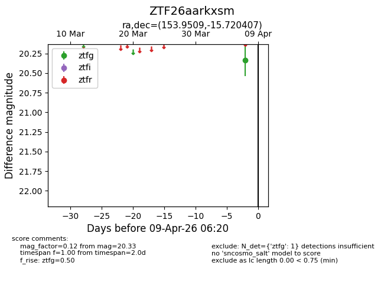
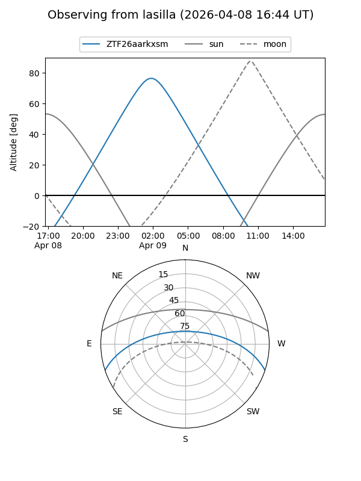
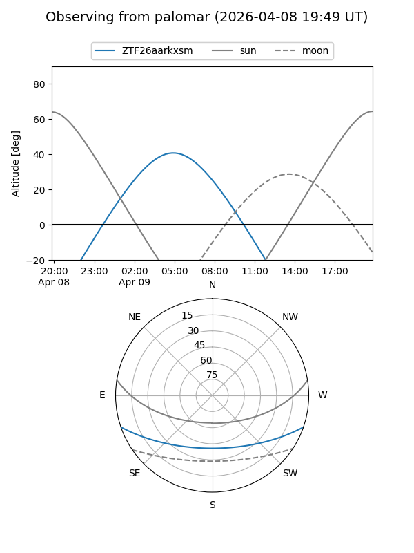

ZTF26aarkxsm
Target ZTF26aarkxsm at 2026-04-09 06:25
Aliases and brokers:
FINK: link
Lasair: link
ALeRCE: link
alt names
ZTF26aarkxsm (ztf,fink_ztf)
Coordinates:
equatorial (ra, dec) = 153.9509,-15.72041
equatorial (HMS+DMS) = 10:15:48.23,-15:43:13.46
galactic (l, b) = (256.8753,+32.89449)
Flags:
Photometry:
last ztfg=20.33
1 ztfg detections
Lightcurve

Visibility


Additional plots